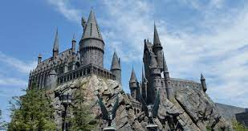

The scenery of Black Lake and the Forbidden Forest, Hogwarts Castle and the bridge where the three friends drive to school for the first time - these views are so mesmerizing that you can't help but wonder where and in what country the Harry Potter movie was filmed? Most of the locations are real locations in England and Scotland. The set scenes were filmed at Leavesden Studios, owned by Warner Bros.
